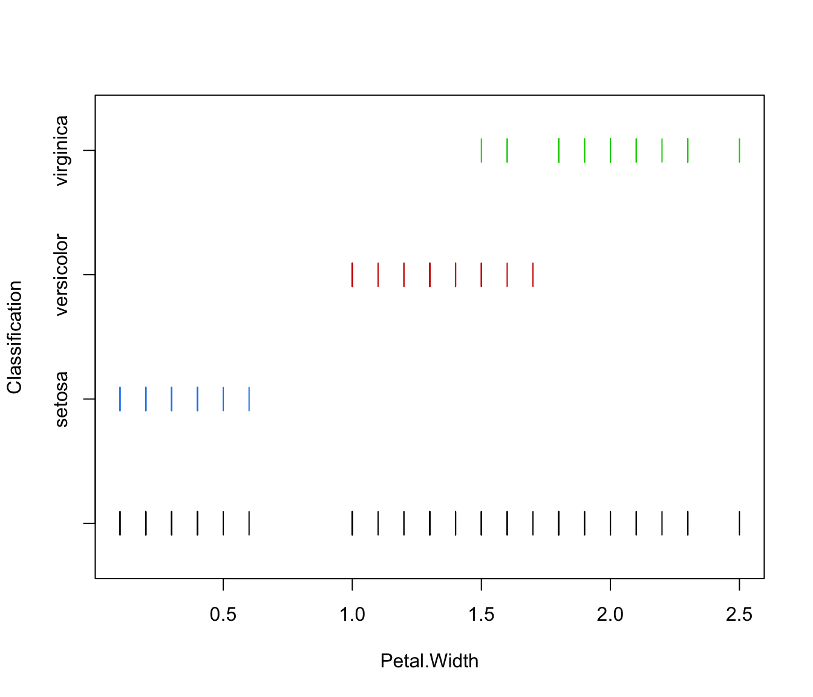
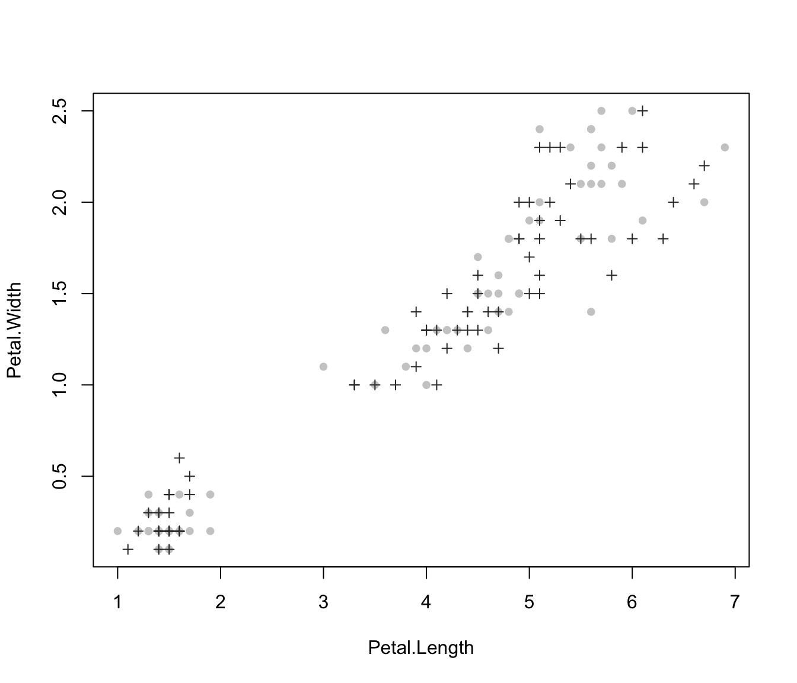
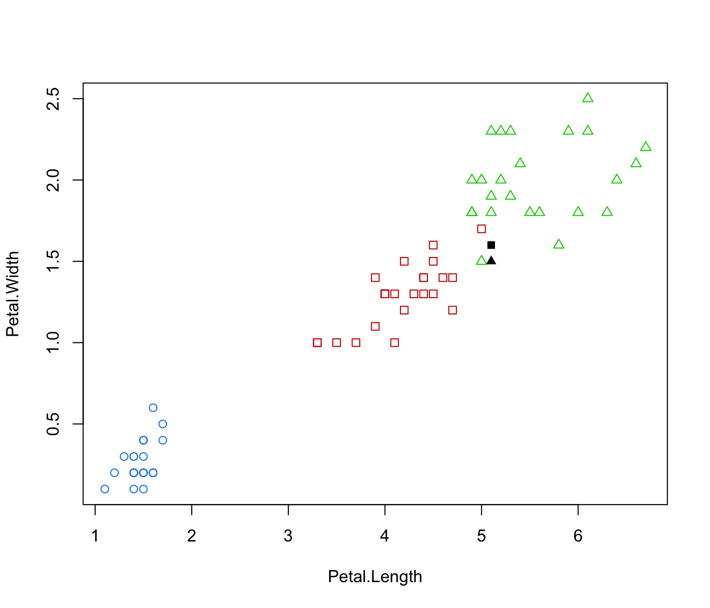

MclustDA discriminant analysis
MclustDA.RdDiscriminant analysis based on Gaussian finite mixture modeling.
MclustDA(data, class, G = NULL, modelNames = NULL, modelType = c("MclustDA", "EDDA"), prior = NULL, control = emControl(), initialization = NULL, warn = mclust.options("warn"), verbose = interactive(), ...)
Arguments
| data | A data frame or matrix giving the training data. |
|---|---|
| class | A vector giving the class labels for the observations in the training data. |
| G | An integer vector specifying the numbers of mixture components
(clusters) for which the BIC is to be calculated within each class.
The default is |
| modelNames | A vector of character strings indicating the models to be fitted
by EM within each class (see the description in
|
| modelType | A character string specifying whether the models given in
|
| prior | The default assumes no prior, but this argument allows specification of a
conjugate prior on the means and variances through the function
|
| control | A list of control parameters for EM. The defaults are set by the call
|
| initialization | A list containing zero or more of the following components: hcPairsA matrix of merge pairs for hierarchical clustering such as produced
by function subsetA logical or numeric vector specifying a subset of the data to be used in the initial hierarchical clustering phase. |
| warn | A logical value indicating whether or not certain warnings
(usually related to singularity) should be issued when
estimation fails.
The default is controlled by |
| verbose | A logical controlling if a text progress bar is displayed during the
fitting procedure. By default is |
| ... | Further arguments passed to or from other methods. |
Value
An object of class 'MclustDA' providing the optimal (according
to BIC) mixture model.
The details of the output components are as follows:
The matched call.
The input data matrix.
The input class labels.
A character string specifying the modelType estimated.
A list of Mclust objects containing information
on fitted model for each class.
The total number of observations in the data.
The dimension of the data.
Optimal BIC value.
Log-likelihood for the selected model.
Number of estimated parameters.
Details
The "EDDA" method for discriminant analysis is described in Bensmail and Celeux (1996), while "MclustDA" in Fraley and Raftery (2002).
References
Scrucca L., Fop M., Murphy T. B. and Raftery A. E. (2016) mclust 5: clustering, classification and density estimation using Gaussian finite mixture models, The R Journal, 8/1, pp. 289-317.
Fraley C. and Raftery A. E. (2002) Model-based clustering, discriminant analysis and density estimation, Journal of the American Statistical Association, 97/458, pp. 611-631.
Fraley C., Raftery A. E., Murphy T. B. and Scrucca L. (2012) mclust Version 4 for R: Normal Mixture Modeling for Model-Based Clustering, Classification, and Density Estimation. Technical Report No. 597, Department of Statistics, University of Washington.
Bensmail, H., and Celeux, G. (1996) Regularized Gaussian Discriminant Analysis Through Eigenvalue Decomposition.Journal of the American Statistical Association, 91, 1743-1748.
See also
Examples
odd <- seq(from = 1, to = nrow(iris), by = 2) even <- odd + 1 X.train <- iris[odd,-5] Class.train <- iris[odd,5] X.test <- iris[even,-5] Class.test <- iris[even,5] # common EEE covariance structure (which is essentially equivalent to linear discriminant analysis) irisMclustDA <- MclustDA(X.train, Class.train, modelType = "EDDA", modelNames = "EEE") summary(irisMclustDA, parameters = TRUE)#> ------------------------------------------------ #> Gaussian finite mixture model for classification #> ------------------------------------------------ #> #> EDDA model summary: #> #> log-likelihood n df BIC #> -125.443 75 22 -345.8707 #> #> Classes n % Model G #> setosa 25 33.33 EEE 1 #> versicolor 25 33.33 EEE 1 #> virginica 25 33.33 EEE 1 #> #> Class prior probabilities: #> setosa versicolor virginica #> 0.3333333 0.3333333 0.3333333 #> #> Class = setosa #> #> Means: #> [,1] #> Sepal.Length 5.024 #> Sepal.Width 3.480 #> Petal.Length 1.456 #> Petal.Width 0.228 #> #> Variances: #> [,,1] #> Sepal.Length Sepal.Width Petal.Length Petal.Width #> Sepal.Length 0.26418133 0.06244800 0.15935467 0.03141333 #> Sepal.Width 0.06244800 0.09630933 0.03326933 0.03222400 #> Petal.Length 0.15935467 0.03326933 0.18236800 0.04091733 #> Petal.Width 0.03141333 0.03222400 0.04091733 0.03891200 #> #> Class = versicolor #> #> Means: #> [,1] #> Sepal.Length 5.992 #> Sepal.Width 2.776 #> Petal.Length 4.308 #> Petal.Width 1.352 #> #> Variances: #> [,,1] #> Sepal.Length Sepal.Width Petal.Length Petal.Width #> Sepal.Length 0.26418133 0.06244800 0.15935467 0.03141333 #> Sepal.Width 0.06244800 0.09630933 0.03326933 0.03222400 #> Petal.Length 0.15935467 0.03326933 0.18236800 0.04091733 #> Petal.Width 0.03141333 0.03222400 0.04091733 0.03891200 #> #> Class = virginica #> #> Means: #> [,1] #> Sepal.Length 6.504 #> Sepal.Width 2.936 #> Petal.Length 5.564 #> Petal.Width 2.076 #> #> Variances: #> [,,1] #> Sepal.Length Sepal.Width Petal.Length Petal.Width #> Sepal.Length 0.26418133 0.06244800 0.15935467 0.03141333 #> Sepal.Width 0.06244800 0.09630933 0.03326933 0.03222400 #> Petal.Length 0.15935467 0.03326933 0.18236800 0.04091733 #> Petal.Width 0.03141333 0.03222400 0.04091733 0.03891200 #> #> Training confusion matrix: #> Predicted #> Class setosa versicolor virginica #> setosa 25 0 0 #> versicolor 0 24 1 #> virginica 0 1 24 #> Classification error = 0.0267 #> Brier score = 0.0097#> ------------------------------------------------ #> Gaussian finite mixture model for classification #> ------------------------------------------------ #> #> EDDA model summary: #> #> log-likelihood n df BIC #> -125.443 75 22 -345.8707 #> #> Classes n % Model G #> setosa 25 33.33 EEE 1 #> versicolor 25 33.33 EEE 1 #> virginica 25 33.33 EEE 1 #> #> Training confusion matrix: #> Predicted #> Class setosa versicolor virginica #> setosa 25 0 0 #> versicolor 0 24 1 #> virginica 0 1 24 #> Classification error = 0.0267 #> Brier score = 0.0097 #> #> Test confusion matrix: #> Predicted #> Class setosa versicolor virginica #> setosa 25 0 0 #> versicolor 0 24 1 #> virginica 0 2 23 #> Classification error = 0.04 #> Brier score = 0.0243# common covariance structure selected by BIC irisMclustDA <- MclustDA(X.train, Class.train, modelType = "EDDA") summary(irisMclustDA, parameters = TRUE)#> ------------------------------------------------ #> Gaussian finite mixture model for classification #> ------------------------------------------------ #> #> EDDA model summary: #> #> log-likelihood n df BIC #> -87.93758 75 36 -331.3047 #> #> Classes n % Model G #> setosa 25 33.33 VEV 1 #> versicolor 25 33.33 VEV 1 #> virginica 25 33.33 VEV 1 #> #> Class prior probabilities: #> setosa versicolor virginica #> 0.3333333 0.3333333 0.3333333 #> #> Class = setosa #> #> Means: #> [,1] #> Sepal.Length 5.024 #> Sepal.Width 3.480 #> Petal.Length 1.456 #> Petal.Width 0.228 #> #> Variances: #> [,,1] #> Sepal.Length Sepal.Width Petal.Length Petal.Width #> Sepal.Length 0.154450439 0.097646496 0.017347101 0.005327878 #> Sepal.Width 0.097646496 0.105230813 0.004066916 0.005599939 #> Petal.Length 0.017347101 0.004066916 0.041742267 0.003476241 #> Petal.Width 0.005327878 0.005599939 0.003476241 0.006454832 #> #> Class = versicolor #> #> Means: #> [,1] #> Sepal.Length 5.992 #> Sepal.Width 2.776 #> Petal.Length 4.308 #> Petal.Width 1.352 #> #> Variances: #> [,,1] #> Sepal.Length Sepal.Width Petal.Length Petal.Width #> Sepal.Length 0.26653496 0.06976610 0.17015657 0.04336127 #> Sepal.Width 0.06976610 0.09861066 0.07509657 0.03823057 #> Petal.Length 0.17015657 0.07509657 0.19799871 0.06126251 #> Petal.Width 0.04336127 0.03823057 0.06126251 0.03627058 #> #> Class = virginica #> #> Means: #> [,1] #> Sepal.Length 6.504 #> Sepal.Width 2.936 #> Petal.Length 5.564 #> Petal.Width 2.076 #> #> Variances: #> [,,1] #> Sepal.Length Sepal.Width Petal.Length Petal.Width #> Sepal.Length 0.37570480 0.025364426 0.280227270 0.03871029 #> Sepal.Width 0.02536443 0.080872957 0.006413281 0.05009229 #> Petal.Length 0.28022727 0.006413281 0.309059434 0.05805268 #> Petal.Width 0.03871029 0.050092291 0.058052679 0.07540425 #> #> Training confusion matrix: #> Predicted #> Class setosa versicolor virginica #> setosa 25 0 0 #> versicolor 0 24 1 #> virginica 0 0 25 #> Classification error = 0.0133 #> Brier score = 0.0054#> ------------------------------------------------ #> Gaussian finite mixture model for classification #> ------------------------------------------------ #> #> EDDA model summary: #> #> log-likelihood n df BIC #> -87.93758 75 36 -331.3047 #> #> Classes n % Model G #> setosa 25 33.33 VEV 1 #> versicolor 25 33.33 VEV 1 #> virginica 25 33.33 VEV 1 #> #> Training confusion matrix: #> Predicted #> Class setosa versicolor virginica #> setosa 25 0 0 #> versicolor 0 24 1 #> virginica 0 0 25 #> Classification error = 0.0133 #> Brier score = 0.0054 #> #> Test confusion matrix: #> Predicted #> Class setosa versicolor virginica #> setosa 25 0 0 #> versicolor 0 24 1 #> virginica 0 2 23 #> Classification error = 0.04 #> Brier score = 0.0297# general covariance structure selected by BIC irisMclustDA <- MclustDA(X.train, Class.train) summary(irisMclustDA, parameters = TRUE)#> ------------------------------------------------ #> Gaussian finite mixture model for classification #> ------------------------------------------------ #> #> MclustDA model summary: #> #> log-likelihood n df BIC #> -71.74193 75 48 -350.7233 #> #> Classes n % Model G #> setosa 25 33.33 VEI 2 #> versicolor 25 33.33 VEE 2 #> virginica 25 33.33 XXX 1 #> #> Class prior probabilities: #> setosa versicolor virginica #> 0.3333333 0.3333333 0.3333333 #> #> Class = setosa #> #> Mixing probabilities: 0.7229143 0.2770857 #> #> Means: #> [,1] [,2] #> Sepal.Length 5.1761949 4.6269248 #> Sepal.Width 3.6366552 3.0712877 #> Petal.Length 1.4777585 1.3992323 #> Petal.Width 0.2441875 0.1857668 #> #> Variances: #> [,,1] #> Sepal.Length Sepal.Width Petal.Length Petal.Width #> Sepal.Length 0.120728 0.000000 0.00000000 0.000000000 #> Sepal.Width 0.000000 0.046461 0.00000000 0.000000000 #> Petal.Length 0.000000 0.000000 0.04892923 0.000000000 #> Petal.Width 0.000000 0.000000 0.00000000 0.006358681 #> [,,2] #> Sepal.Length Sepal.Width Petal.Length Petal.Width #> Sepal.Length 0.03044364 0.00000000 0.00000000 0.000000000 #> Sepal.Width 0.00000000 0.01171594 0.00000000 0.000000000 #> Petal.Length 0.00000000 0.00000000 0.01233835 0.000000000 #> Petal.Width 0.00000000 0.00000000 0.00000000 0.001603451 #> #> Class = versicolor #> #> Mixing probabilities: 0.2364317 0.7635683 #> #> Means: #> [,1] [,2] #> Sepal.Length 6.736465 5.761483 #> Sepal.Width 3.000982 2.706336 #> Petal.Length 4.669933 4.195931 #> Petal.Width 1.400893 1.336861 #> #> Variances: #> [,,1] #> Sepal.Length Sepal.Width Petal.Length Petal.Width #> Sepal.Length 0.030012918 0.008262520 0.02533959 0.008673053 #> Sepal.Width 0.008262520 0.020600060 0.01200205 0.008400168 #> Petal.Length 0.025339590 0.012002053 0.03924151 0.013788157 #> Petal.Width 0.008673053 0.008400168 0.01378816 0.007666627 #> [,,2] #> Sepal.Length Sepal.Width Petal.Length Petal.Width #> Sepal.Length 0.16630011 0.04578222 0.14040543 0.04805696 #> Sepal.Width 0.04578222 0.11414392 0.06650279 0.04654492 #> Petal.Length 0.14040543 0.06650279 0.21743528 0.07639950 #> Petal.Width 0.04805696 0.04654492 0.07639950 0.04248041 #> #> Class = virginica #> #> Mixing probabilities: 1 #> #> Means: #> [,1] #> Sepal.Length 6.504 #> Sepal.Width 2.936 #> Petal.Length 5.564 #> Petal.Width 2.076 #> #> Variances: #> [,,1] #> Sepal.Length Sepal.Width Petal.Length Petal.Width #> Sepal.Length 0.349184 0.019056 0.272144 0.040896 #> Sepal.Width 0.019056 0.079104 0.011296 0.048064 #> Petal.Length 0.272144 0.011296 0.285504 0.049536 #> Petal.Width 0.040896 0.048064 0.049536 0.074624 #> #> Training confusion matrix: #> Predicted #> Class setosa versicolor virginica #> setosa 25 0 0 #> versicolor 0 25 0 #> virginica 0 0 25 #> Classification error = 0 #> Brier score = 0.0041#> ------------------------------------------------ #> Gaussian finite mixture model for classification #> ------------------------------------------------ #> #> MclustDA model summary: #> #> log-likelihood n df BIC #> -71.74193 75 48 -350.7233 #> #> Classes n % Model G #> setosa 25 33.33 VEI 2 #> versicolor 25 33.33 VEE 2 #> virginica 25 33.33 XXX 1 #> #> Training confusion matrix: #> Predicted #> Class setosa versicolor virginica #> setosa 25 0 0 #> versicolor 0 25 0 #> virginica 0 0 25 #> Classification error = 0 #> Brier score = 0.0041 #> #> Test confusion matrix: #> Predicted #> Class setosa versicolor virginica #> setosa 25 0 0 #> versicolor 0 24 1 #> virginica 0 1 24 #> Classification error = 0.0267 #> Brier score = 0.0159plot(irisMclustDA)if (FALSE) { # simulated 1D data n <- 250 set.seed(1) triModal <- c(rnorm(n,-5), rnorm(n,0), rnorm(n,5)) triClass <- c(rep(1,n), rep(2,n), rep(3,n)) odd <- seq(from = 1, to = length(triModal), by = 2) even <- odd + 1 triMclustDA <- MclustDA(triModal[odd], triClass[odd]) summary(triMclustDA, parameters = TRUE) summary(triMclustDA, newdata = triModal[even], newclass = triClass[even]) plot(triMclustDA, what = "scatterplot") plot(triMclustDA, what = "classification") plot(triMclustDA, what = "classification", newdata = triModal[even]) plot(triMclustDA, what = "train&test", newdata = triModal[even]) plot(triMclustDA, what = "error") plot(triMclustDA, what = "error", newdata = triModal[even], newclass = triClass[even]) # simulated 2D cross data data(cross) odd <- seq(from = 1, to = nrow(cross), by = 2) even <- odd + 1 crossMclustDA <- MclustDA(cross[odd,-1], cross[odd,1]) summary(crossMclustDA, parameters = TRUE) summary(crossMclustDA, newdata = cross[even,-1], newclass = cross[even,1]) plot(crossMclustDA, what = "scatterplot") plot(crossMclustDA, what = "classification") plot(crossMclustDA, what = "classification", newdata = cross[even,-1]) plot(crossMclustDA, what = "train&test", newdata = cross[even,-1]) plot(crossMclustDA, what = "error") plot(crossMclustDA, what = "error", newdata =cross[even,-1], newclass = cross[even,1]) }